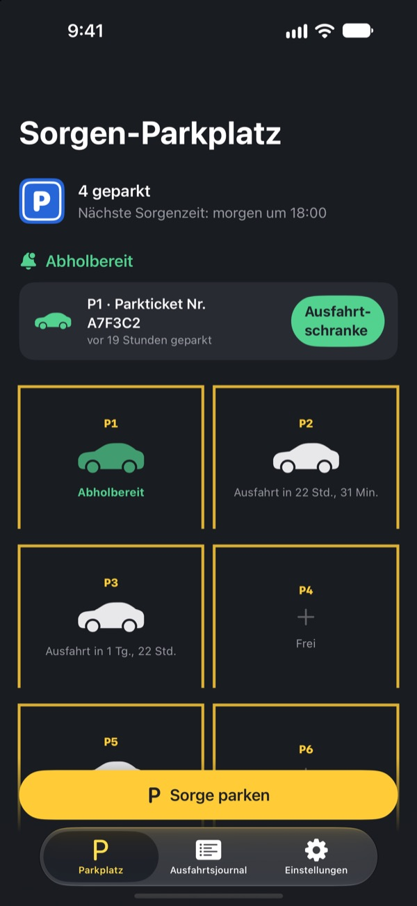
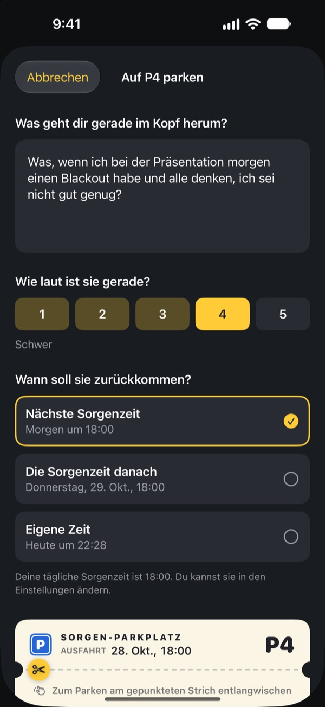
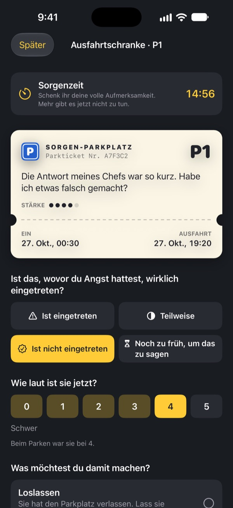
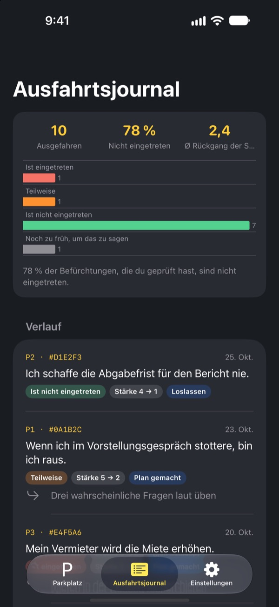

Park die Sorge.
Hol sie später ab.
Schreib auf, was dir abends im Kopf herumkreist, und lass es auf einem Parkschein zurück. Zu deiner Sorgenzeit bekommst du es wieder. Bis dahin musst du es nicht mit dir herumtragen.
Alle Funktionen sind kostenlos. Keine Werbung, kein Konto.

Park eine Sorge
Lass das Beispiel stehen oder schreib, was dich gerade beschäftigt. Geparkt wird sie unscharf, und zur Sorgenzeit holst du sie wieder hervor.
Licht aus, Kopfkino an?
Kaum liegst du im Bett, geht es los: ein Satz von heute, das Meeting morgen, die Nachricht, auf die noch keine Antwort kam. Je mehr du dir sagst, nicht daran zu denken, desto lauter wird es. Der Sorgen-Parkplatz verlangt nicht, dass du die Sorge wegdrückst. Du schreibst sie auf, gibst ihr einen Platz und legst eine Zeit fest, um dich darum zu kümmern.
Aufgeschrieben ist sie raus aus dem Kopf
Schreib sie genau so auf, wie sie in deinem Kopf klingt, und gib an, wie laut sie gerade ist, von 1 bis 5. Reiß den Parkschein ab, und die Sorge bleibt unscharf auf dem Parkplatz stehen.
Kommt sie wieder angefahren, sag ihr: Du hast schon einen Platz. Deine Zeit kommt noch, aber nicht jetzt.

15 Minuten zur Sorgenzeit
Jeden Tag zu deiner Sorgenzeit kommt ein Hinweis. An der Ausfahrtschranke liest du die Sorge noch einmal und prüfst, ob sie wirklich eingetreten ist und wie laut sie jetzt noch ist.
Dann lässt du sie los, machst einen kleinen nächsten Schritt daraus oder parkst sie bis zur nächsten Sorgenzeit.

Sieh, wie oft deine Sorgen recht hatten
Je mehr Sorgen durch die Ausfahrt sind, desto klarer zeigt das Ausfahrtsjournal, wie viele wirklich eingetreten sind und wie stark sie nachgelassen haben.
Sorgen malen die Zukunft oft schwärzer, als sie wird. Je mehr du festhältst, desto weniger glaubst du der nächsten.

In drei Schritten startklar
- 1
Leg deine Sorgenzeit fest
Beim ersten Öffnen wählst du, wann du dich jeden Tag um deine Sorgen kümmerst. Ändern kannst du das später in den Einstellungen.
- 2
Park eine echte Sorge
Park gleich etwas, das dich beschäftigt, und spür, wie sich die Stärke vorher und nachher verändert.
- 3
Erlaube Abholhinweise
Zur Sorgenzeit bekommst du einen Hinweis, auf dem nur die Platznummer steht.
Warum es wirkt
- Nur zu einer festen Zeit sorgen
- Wer seine Sorgen in eine kurze tägliche Sorgenzeit verlegte, grübelte weniger und berichtete von weniger Angst und Schlafproblemen. (Borkovec u. a., 1983; McGowan & Behar, 2013)
- Aufschreiben, um loszulassen
- Ein konkreter Plan verhinderte, dass sich Unerledigtes in die Gedanken drängte, und wer vor dem Schlafen fünf Minuten lang aufschrieb, schlief schneller ein. (Masicampo & Baumeister, 2011; Scullin u. a., 2018)
- Prüfen, was wirklich passiert ist
- Als Menschen mit chronischen Sorgen ihre Sorgen festhielten, traten 91 % davon nicht ein. (LaFreniere & Newman, 2020)
Der Sorgen-Parkplatz beruht auf dem Sorgenaufschub, einer seit Jahrzehnten erforschten Technik der kognitiven Verhaltenstherapie (KVT).
Alles ist kostenlos
Kostenlos
- Unbegrenzt viele Parkplätze
- Tägliche Hinweise zur Sorgenzeit, eigene Ausfahrtszeiten
- Ausfahrtschranke und Ausfahrtsjournal
- Ausfahrt-Einblicke: wie viel eingetreten ist und wie stark die Sorgen nachließen
Trinkgeld, wenn du magst
- Wenn dir die App hilft, kannst du dem Entwickler ein kleines Trinkgeld geben
- Klein, mittel oder groß, wie du möchtest
Trinkgeld schaltet nichts frei. Ohne funktioniert alles genauso.
Keine Werbung, kein Konto, keine Server, keine Analyse-Tools. Alles, was du schreibst, bleibt auf deinem iPhone.
Häufige Fragen
Wie ändere ich meine Sorgenzeit?
Im Tab Einstellungen unter Sorgenzeit. Die neue Zeit gilt für alle Sorgen, die du ab dann parkst. Bereits geparkte Sorgen behalten ihre ursprüngliche Ausfahrtszeit.
Ich bekomme keine Abholhinweise.
Sieh im Tab Einstellungen unter Mitteilungen nach. Steht dort, dass Mitteilungen aus sind, tippe auf iOS-Einstellungen öffnen und schalte sie ein. Mit einem Fokus oder Nicht stören kommen Hinweise womöglich lautlos an. Auch ohne Hinweis werden fällige Sorgen auf dem Parkplatz als abholbereit angezeigt.
Steht meine Sorge in der Mitteilung?
Nein. Mitteilungen zeigen nur die Platznummer, etwa „P3 ist abholbereit“. Die Sorge selbst siehst du erst, wenn du die App öffnest und zur Ausfahrtschranke gehst.
Kann ich eine Sorge vor der Sorgenzeit ansehen?
Tippe auf dem Parkplatz auf ihr Auto und wähle Jetzt zur Ausfahrtschranke schicken. Aufschieben wirkt aber am besten, wenn du wartest. Die meisten Sorgen wirken zur Sorgenzeit schon kleiner.
Kann ich meine Einträge auf ein neues iPhone mitnehmen?
Alles liegt nur auf deinem iPhone, ohne Konto und ohne Sync. Wenn du ein neues iPhone aus einem iCloud- oder Computer-Backup wiederherstellst oder Schnellstart nutzt, kommen die Daten zusammen mit deinen anderen App-Daten mit.
Wie lösche ich Einträge?
Wisch im Tab Ausfahrtsjournal einen Eintrag nach links, um ihn zu löschen. Wenn du die App löschst, ist alles weg.
Ist das eine Therapie?
Der Sorgen-Parkplatz ist ein Selbsthilfe-Werkzeug, das auf dem Sorgenaufschub aus der KVT beruht. Er ist kein Medizinprodukt und ersetzt keine professionelle Diagnose oder Behandlung.
Was, wenn es mir gerade richtig schlecht geht?
Wenn Sorgen deinen Alltag bestimmen oder du daran denkst, dir etwas anzutun, trag das bitte nicht allein. In Deutschland erreichst du die Telefonseelsorge kostenlos unter 0800 111 0 111 oder 0800 111 0 222, im Notfall den Notruf 112.
Fragen oder Feedback? Schreib an leeo@kakao.com.